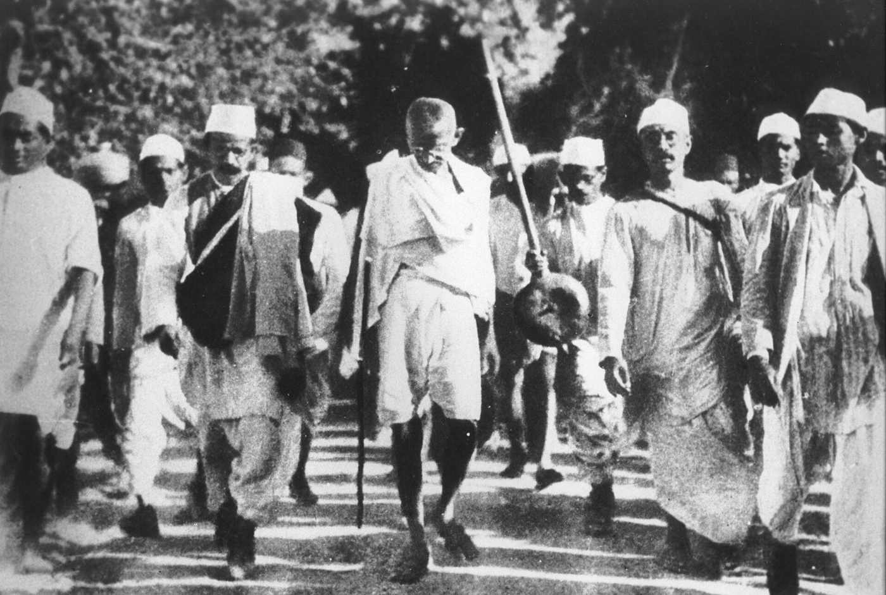

गांधी जयंती · 2 अक्टूबर 2026
संकल्प दूत बनें
अपने समुदाय में बदलाव के वाहक बनें

नशे के विरुद्ध लड़ाई केवल कानून, पुलिस, उपचार या पुनर्वास की जिम्मेदारी नहीं है। इसकी एक महत्वपूर्ण शुरुआत हमारे घर, परिवार, विद्यालय, मित्र समूह और समुदाय से होती है।
जब शादी-ब्याह, उत्सव और सामाजिक मेल-मिलाप में नशे को सामान्य माना जाता है, उसे परोसा जाता है या उसकी मनुहार की जाती है, तो अनजाने में समाज उसे स्वीकृति देने लगता है।
इसी सामाजिक स्वीकृति को बदलने के लिए शिक्षक दिवस पर शुरू हुआ लोकसंकल्प अब गांधी जयंती से अपने अगले चरण में प्रवेश कर रहा है।
अब आवश्यकता है ऐसे नागरिकों की, जो केवल स्वयं संकल्प न लें, बल्कि अपने परिवार और समुदाय में सकारात्मक बदलाव के वाहक बनें।
गांधी जी ने नशामुक्ति को अपने रचनात्मक कार्यक्रम का अंग बनाया था, और उनका तरीक़ा दंड का नहीं था। वे कहते थे कि नशा करने वाले से रिश्ता बनाकर, समझा-बुझाकर उसे इससे बाहर लाया जाए। संविधान के अनुच्छेद 47 में नशाबंदी का जो निर्देश है, वह उन्हीं के आग्रह से आया।
लोकसंकल्प का पाँचवाँ संकल्प यही बात आज की भाषा में कहता है : तिरस्कार नहीं, सहयोग।
एक संकल्प दूत → अनेक परिवार → एक जागरूक समुदाय
परिचय
संकल्प दूत कौन है?
संकल्प दूत लोकसंकल्प का सामुदायिक स्वयंसेवक है। वह नशा करने वाले व्यक्ति के विरुद्ध नहीं, बल्कि नशे को सामान्य बनाने वाली सामाजिक स्वीकृति के विरुद्ध काम करेगा।
वह अपने परिवार, मित्रों, विद्यालय-महाविद्यालय, कार्यस्थल, गाँव या मोहल्ले में संवाद के माध्यम से जागरूकता बढ़ाएगा; नशामुक्त सामाजिक आयोजनों को प्रोत्साहित करेगा; बच्चों और युवाओं के लिए सकारात्मक वातावरण बनाने में सहयोग करेगा; और आवश्यकता होने पर नशे पर निर्भर व्यक्ति को तिरस्कार या कलंक के बजाय उचित परामर्श और पुनर्वास सहायता से जोड़ने का प्रयास करेगा।
एक संकल्प दूत क्या कर सकता है?
संकल्प दूत से किसी बड़े या कठिन कार्य की अपेक्षा नहीं है। शुरुआत अपने आसपास से होगी : अपने परिवार में संवाद, सामाजिक आयोजनों में नशा न परोसने के लिए प्रेरित करना, अभिभावकों और युवाओं को जोड़ना, लोकसंकल्प सभा आयोजित करना, अभियान की ज्ञान सामग्री साझा करना और जरूरतमंद व्यक्ति को उचित सहायता तक पहुँचने में सहयोग देना।
छोटे-छोटे सामाजिक प्रयास मिलकर ही सामाजिक मानदंड बदलते हैं।
जो आप लेंगे
संकल्प दूत के पाँच संकल्प
-
स्वयं से शुरुआत
मैं स्वयं नशे से दूर रहूँगा / रहूँगी और अपने व्यवहार से सकारात्मक उदाहरण प्रस्तुत करूँगा / करूँगी।
-
नशे को सामाजिक स्वीकृति नहीं
मैं विवाह, उत्सव, शोक-सभा, मेल-मिलाप अथवा अन्य सामाजिक अवसरों पर नशा परोसने, उसकी मनुहार करने या उसे सामान्य सामाजिक व्यवहार मानने को हतोत्साहित करूँगा / करूँगी।
-
परिवार और युवाओं से संवाद
मैं बच्चों और युवाओं को केवल डराने या रोकने के बजाय संवाद, Good Parenting और सकारात्मक गतिविधियों के माध्यम से नशे से दूर रखने का प्रयास करूँगा / करूँगी।
-
लोकसंकल्प को समुदाय तक पहुँचाना
मैं अपने गाँव, मोहल्ले, संस्था अथवा कार्यस्थल में लोकसंकल्प के विचार और उपलब्ध ज्ञान सामग्री को लोगों तक पहुँचाने तथा सामुदायिक गतिविधियों में सहयोग करने का प्रयास करूँगा / करूँगी।
-
तिरस्कार नहीं, सहयोग
मैं नशे की निर्भरता से जूझ रहे व्यक्ति को कलंकित करने के बजाय उसे उचित काउंसलिंग, उपचार और पुनर्वास सहायता से जोड़ने में यथासंभव सहयोग करूँगा / करूँगी।
आज ही जुड़िए
संकल्प दूत के रूप में पंजीकरण करें
बदलाव के लिए जरूरी नहीं कि आप किसी बड़े संगठन का हिस्सा हों। आप शिक्षक हों, विद्यार्थी, अभिभावक, युवा, सामाजिक कार्यकर्ता, कर्मचारी, किसान, व्यवसायी या जिम्मेदार नागरिक, आप अपने आसपास बदलाव की शुरुआत कर सकते हैं।
पंजीकरण निःशुल्क है और पूर्णतः स्वैच्छिक सामाजिक सहभागिता है। पंजीकरण करते ही आपका क्रमांक और प्रमाण-पत्र यहीं मिल जाएगा।
आप अब संकल्प दूत हैं!
लोकसंकल्प परिवार में आपका स्वागत है।
आपका एक संकल्प किसी परिवार में संवाद शुरू कर सकता है, एक परिवार किसी सामाजिक प्रथा को बदल सकता है, और अनेक परिवार मिलकर समाज का मानदंड बदल सकते हैं।
आपका संकल्प दूत क्रमांक :
आज से शुरुआत करें
आज कम से कम पाँच लोगों तक लोकसंकल्प का संदेश पहुँचाएँ और उन्हें भी संकल्प दूत बनने के लिए प्रेरित करें।
लोकसंकल्प का व्हाट्सऐप चैनल
चैनल से जुड़ जाइए, ताकि लोकसंकल्प के संदेश सीधे आपके व्हाट्सऐप पर आते रहें।
चैनल पर आपका नंबर किसी को नहीं दिखता, न दूसरे जुड़े हुए लोगों को और न चैनल चलाने वालों को।

डिजिटल प्रमाण-पत्र
संकल्प दूत प्रमाण-पत्र
लोकसंकल्प : नशे की सामाजिक स्वीकृति के विरुद्ध जन-आंदोलन
यह प्रमाणित किया जाता है कि
आपका नामने लोकसंकल्प के उद्देश्यों के प्रति अपनी स्वैच्छिक प्रतिबद्धता व्यक्त करते हुए ‘संकल्प दूत’ के रूप में पंजीकरण किया है।
तथा अपने परिवार और समुदाय में नशे की सामाजिक स्वीकृति को कम करने, सकारात्मक सामाजिक वातावरण को बढ़ावा देने और नशामुक्त समाज के निर्माण में सहयोग करने का संकल्प लिया है।
“बदलाव का इंतज़ार नहीं, बदलाव के वाहक बनें।”
प्रो. श्यामसुंदर ज्याणी
संयोजक, नई किरण नशा मुक्ति केंद्र
राजकीय डूंगर महाविद्यालय, बीकानेर
प्रवर्तक, लोकसंकल्प
दिनांक आज
संकल्प दूत क्रमांक :
बदलाव का इंतज़ार नहीं, बदलाव के वाहक बनें।
फेसबुक और X पर तस्वीर अपने आप नहीं जाती। पहले प्रमाण-पत्र डाउनलोड कीजिए, फिर पोस्ट में जोड़ लीजिए। फ़ोन पर “साझा करें” से प्रमाण-पत्र सीधा भेजा जा सकता है।
अब यह पाँच लोगों तक पहुँचाइए
एक संकल्प दूत से अनेक परिवार जुड़ते हैं। नीचे वाला संदेश तैयार है, बस भेजना है।
मैं संकल्प दूत बन गया/गई हूँ। लोकसंकल्प के साथ, नशे की सामाजिक स्वीकृति के विरुद्ध। शादी हो, उत्सव हो या शोक, नशा परोसना बंद हो। आप भी बनिए, दो मिनट लगते हैं। https://loksankalp.org/sankalp-doot.html
सजीव आँकड़े
अब तक कितने संकल्प दूत
पंजीकरण करते ही यह संख्या बढ़ जाती है।
यह संदेश आगे भेजिए
यह अभियान एक-दूसरे को भेजे गए संदेशों से ही गाँव-गाँव पहुँचा है।
संकल्प दूत बनिए। नशा करने वाले के विरुद्ध नहीं, नशे को सामान्य बनाने वाली सामाजिक स्वीकृति के विरुद्ध। अपने परिवार, गाँव और संस्था में बदलाव की शुरुआत आप कर सकते हैं। पंजीकरण निःशुल्क है और दो मिनट लगते हैं। https://loksankalp.org/sankalp-doot.html